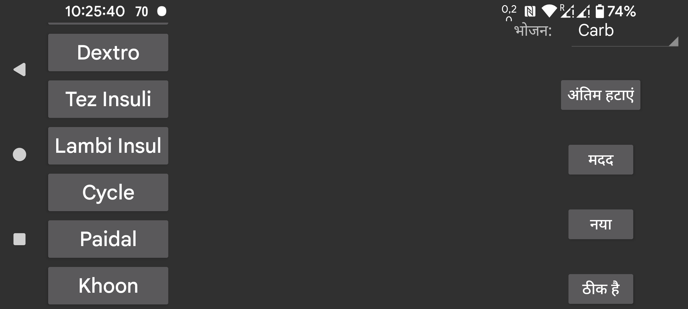

यहाँ आप इंसुलिन, कार्बोहाइड्रेट या शारीरिक गतिविधि को निर्दिष्ट करने के लिए ग्राफ़ में जोड़ी गई मात्राओं के लिए लेबल बना, हटा और संशोधित कर सकते हैं। यदि आपने पहले से कुछ मात्राएं सहेजी हैं, तो उन्हें उनकी स्थिति के अनुरूप लेबल मिलेगा। तो यदि आप दूसरी स्थिति को कोई अन्य नाम देते हैं, तो दूसरी स्थिति में पिछले नाम के साथ निर्दिष्ट पहले से सहेजी गई मात्राओं को वह नाम मिल जाएगा।
किसी लेबल को संशोधित करने के लिए, उसे छुएं।
भोजन के बाद, आप चुन सकते हैं कि कौन सा लेबल भोजन की कार्बोहाइड्रेट सामग्री के लिए है। उस लेबल के लिए बाएं मध्य मेन्यू में "नई मात्रा" में एक भोजन बटन जोड़ा जाता है, जिसके द्वारा आप एक भोजन को उसकी सामग्री से निर्दिष्ट कर सकते हैं। कार्बोहाइड्रेट योग फिर इस लेबल के तहत सहेजा जाता है और आप बाद में एक सहेजे गए मान का भोजन चुनकर इस भोजन को देख सकते हैं।